Final Project Report: New Jersey Maps
Abstract
This data project was inspired by replicating figures from the Associate Press (AP) that visualized the results of the 2025 New Jersey gubernatorial election. In addition to recreating the maps, I also graphed longer-term trends in NJ partisan elections from 2000 to 2025. I included figures of other demographic factors over that same time period using population and racial/ethnicity data from the U.S. Census. My figures demonstrate while New Jersey has become increasingly nonwhite, the state is still predominantly white in all except three counties. The most diverse counties tend to vote more Democratic in presidential, senate, and gubernatorial election. However, because my analysis does not perform any statistical analysis nor does it include control variable besides population and population density, I make no causal argument about the effect of racial/ethnic makeup and voting trends.
Project Overview and Motivation
On Tuesday, November 4, 2025, New Jersey elected Democratic candidate Mikie Sherill as Governor. The Associated Press (AP) called the race within a few hours of polls closing, and Sherill joined the ranks of Democrats such as Abigail Spanberger (VA Governor) and Zohran Mamdani (NYC Mayor) who won surprisingly handy victories in 2025 off-off-year elections.
Prior to the results being announced, political analysts seemed unsure of what historic trends might predict for the NJ gubernatorial contest. The AP wrote:
“New Jersey will break one of two trends with this election. Voters have elected a governor from the opposite party of the sitting president in every election from 1989 to 2017 — good news for Democratic Rep. Mikie Sherrill. But no party has held the New Jersey governorship for more than three consecutive terms since the 1960s, which bodes well for Republican nominee Jack Ciattarelli.”
Given the trends, it was even more suprising when Sherill’s victory was announced. Not only did she win, but she outperformed Kamala Harris across the state. She also performed better than incumbent Democratic candidate, Philip Murphy, had done in 2021 for the last governor’s election. Even in solidly red counties, Sherill received more votes than Murphy had.
The results described above were nicely visualized in two graphics on the Associated Press’s website (Figure 1). The first, as you can see below, showed the ballot tally in each county. The dots are sized to represent how many ballots were counted (i.e., counties with more people voting have larger circles), and the circles are also shaded to represent the partisan breakdown of the vote tally– the more blue the circle, the higher margin of victory for Sherill; the more red, the higher the margin was for Republican Jack Ciattarelli.
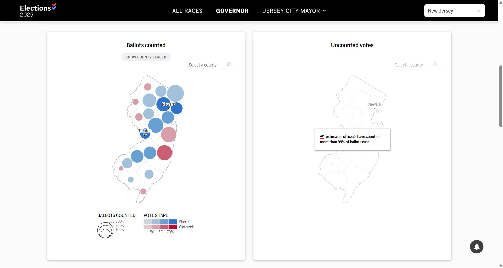
When I originally started this project (and less than a week ago), there was a second figure on the righthand side of the page. That figure showed the margin shift between 2021 and 2025. The figure showed that every single county, even ones that were solidly Republican, tallied more Democratic votes in 2021 than in 2025. Unfortunately, the margin shift figure is no longer available, and I was not able to find a previous version in Internet archives.
I embarked on this project to try to better understand and visualize partisan voting trends in New Jersey over the past 25 years. To complement this analysis, I also included a few demographic factors: population count; population density; and race/ethnicity.
Data Used
To draw maps with NJ counties, I used a shapefile from the US census, filtered down to just counties with the NJ fips code (34). This shapefile is the same one provided in the course drive for Practicum 2. New Jersey has twenty-one counties, and they are the unit of observation for my analysis (Figure 2).
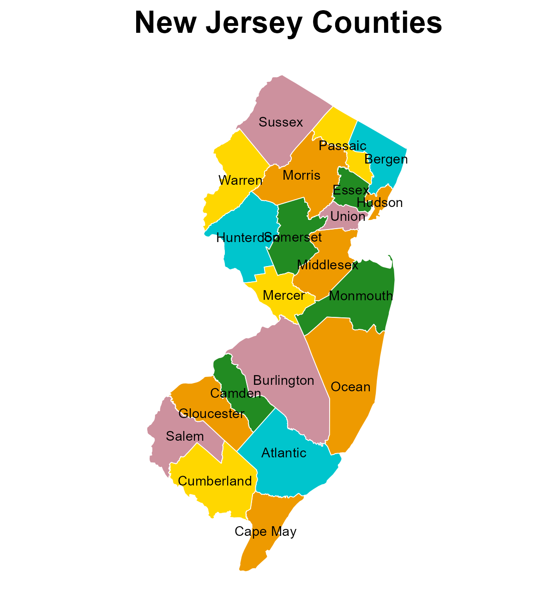
For election results, I used several datasets from the Carlos Algara Dataverse, housed on Harvard’s dataverse website. I pulled election data about presidential, gubernatorial and senate elections. A link to the presidental dataset (which can then easily be used to find senate and gubernatorial data) is here.
The Algara data only go until 2020, so I did not have information about either the 2021 governor’s race or the most recent 2025 race. Actually, it also meant that I didn’t have data for the 2024 senate race, which Andy Kim, a Democrat, won; however, I decided that it was not important enough to go find the vote totals for each county.
In order to be able to map the gubernatorial results, I created my own data set, which is included in the data folder as a CSV file, “updated_gov.” To create the file, I went to the County Clerk website for each of New Jersey’s twenty-one counties and found the vote totals for both 2021 and 2025. I cross-referenced the numbers against one’s on the AP’s website to make sure that I was creating an accurate replication. I did not include any third-party votes in the updated dataset because my focus was on two-party trends.
For the subsequent figures, I used the same Census shapefile and also pulled data directly from the Census website using my key. I queried the 2000, 2010, and 2020 decennial censuses, and I pulled information about population size and racial/ethnic characteristics.
Process, Scripts, and Figures
My project includes four R scripts, each of which loads data, cleans and transforms it, and then creates one or more visualizations. I divided the workflow into three broad categories: partisan maps; population and population density (which I term “demographics”); and race and ethnicity.
Partisan Maps
For this section, I drew on Practicum 2 to start with a basic map of NJ counties. I then pulled the election data, and for each kind of election (presidential, senate, and gubernatorial), I calculated vote percentages for Democrats and Republicans and then created a variable called d_points which was Democratic share minus Republican share. This allowed me to graph results on a single scale from -1 to 1 and color positive values in blue to conform to visualization standards for US election maps (Figure 3). I used some of the same techniques but different graphing code to replicate the figures from the AP.
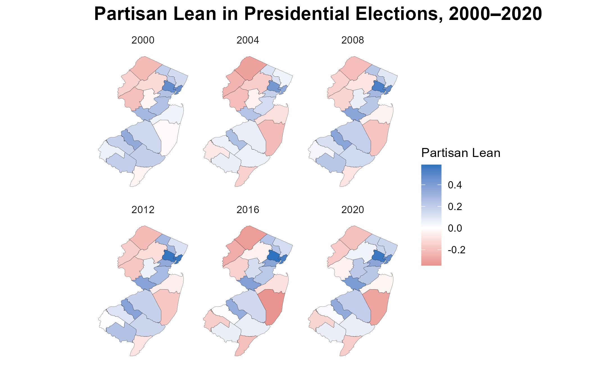
For each figure, I included multiple years in one image using facet_wrap so that it was easier to see how the voting trends evolved over time. I did not use a function to generate the maps or to create graphics for all three election types because each type has a slightly different set of variables. I found it easier to copy-paste the code and adjust as needed.
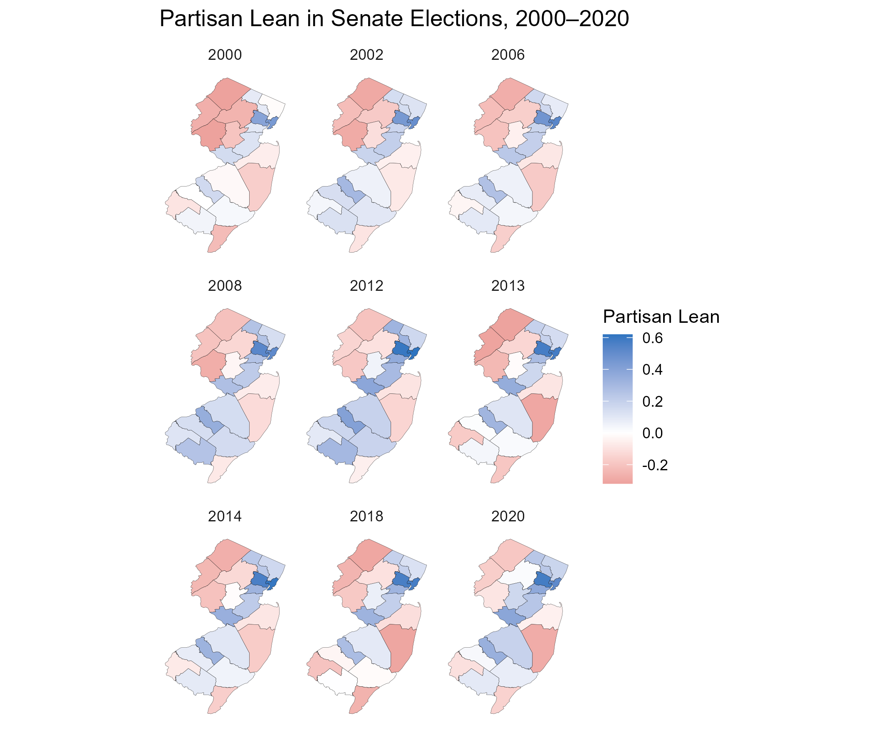
The Senate maps show a fairly blue New Jersey (Figure 4). Indeed, the state has not elected a Republican senator since 1972 (two were appointed to finish terms but did not seek/win re-election). In contrast, the gubernatorial maps below paint a slightly different portrait. As reflected in the quote from the AP above, New Jersey has never elected a governor from the same party for three terms in a row, so after eight years of Democratic governance, it tends to swing right. In the maps below, 2009 and 2013 represent years when Chris Christie was [re]elected (Figure 5).
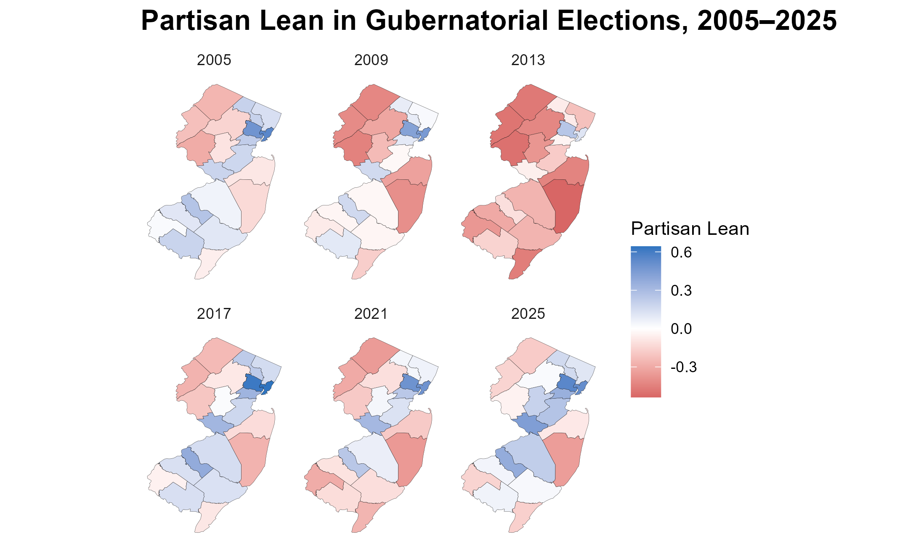
In addition to temporal maps, I also replicated the figures from the Associated Press (Figures 6 and 7). The data for the first map is much the same as for the gubernatorial maps seen above. I tinkered more with ggplot2 to get the dots to plot in the appropriate size. For the margin shift, I unstacked the data and made it wide, which allowed me to calculate shifts in Democratic and Republican vote percentages between 2021 and 2025.
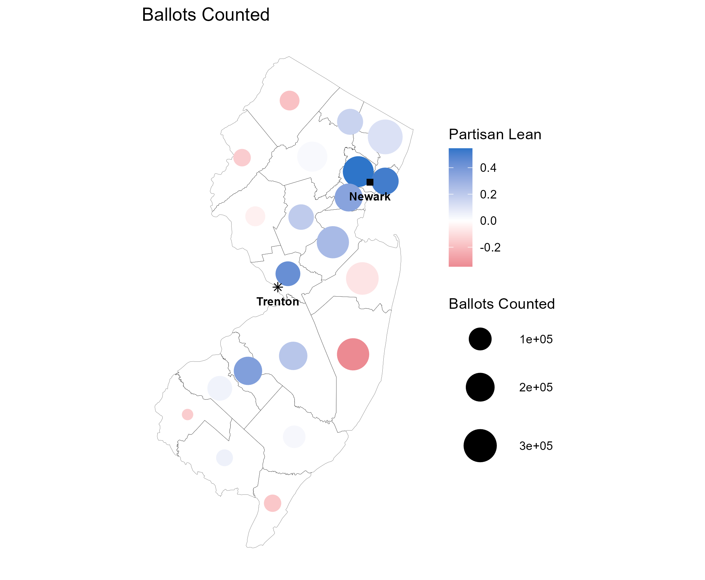 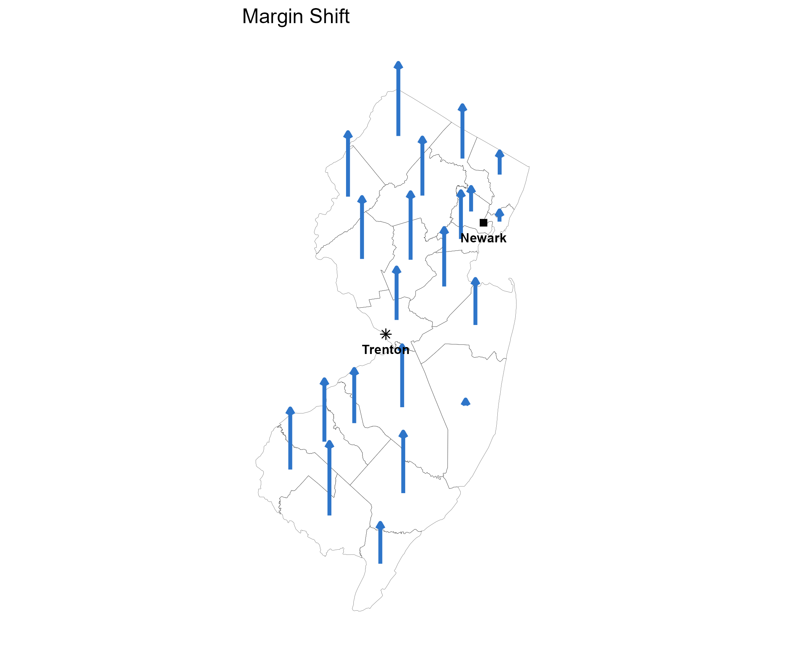
Demographics
For the population and population density figures, I also relied on code I had written for Practicum 2. I found it relatively easy to graph the overall population (Figure 8). Whereas in Practicum 2, I ended up using a logged scale, I just set the scale limits here to the minimum and maximum population values. In New Jersey, there are quite large differences. For example, Salem County had around 64,000 people in 2000 compared to Bergen County’s 955,000 people in 2020. But this pales in comparison to the Hamilton County-NYC difference for New York State.
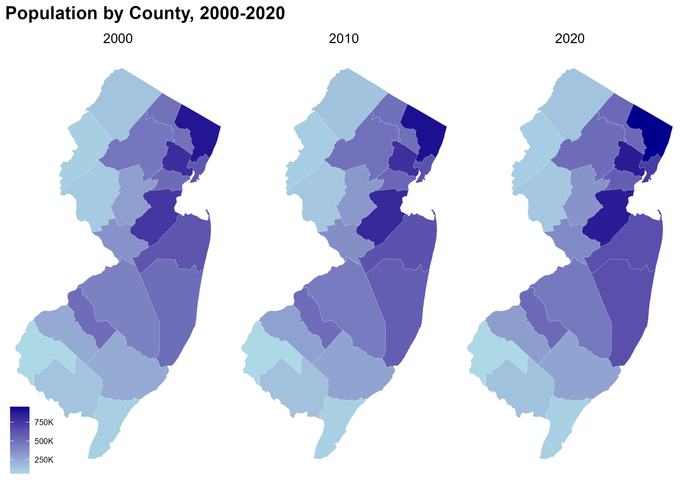
The main difference for the demographics section was that I spent more time trying to adjust the scale and the color spectrum to capture the full range of density. For some context, the lowest density count was fewer than 300 people per square mile (Salem County), and the most dense county was Hudson County which had over 15,600 people per square mile (see Figure 9). I binned the data, and then I used AI to help me identify how many bins there were in the full scale (53) versus how many bins were actually used (19). This was important because creating a scale that would support 53 distinct bins was pretty much impossible, or rather, it was possible but it obscured small changes in counties across time, which was precisely what I wanted to show. Once I knew that only a fraction of the bins were represented in the data, I could focus on a 19-color scale that perhaps obscured the gap between the least and most dense counties, but would at least show how counties evolved over time.
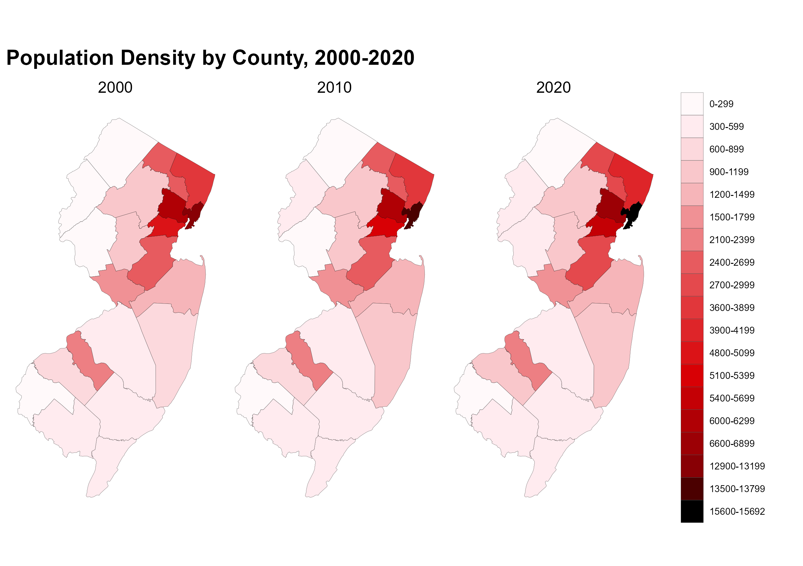
Race and Ethnicity
Finally, for race and ethnicity, it took me much longer to find the right variables to use in the census and to make sure I was comparing likes across the three decennial censuses. Once I pulled the data, I cleaned it and calculated percentages for each group. For this set of graphs, I had five groups of interest: white; nonwhite; Black; Hispanic/Latino; and Asian. Although other races were included in the data set, they were never a dominant ethnic group, and indeed, typically American Indians, Hawaiians and Pacific Islanders, and people of one or more races made up only 1-3% of a county’s population in a given year.
For these graphs, I found it much more efficient to write a function that would loop through the five demographic groups I identified and shade the counties according to the percentage of the population that each group represented. I opted to create two sets of graphs with different scales.
In the first set, I graphed all of the groups on the same 0% - 100% scale (Figures 11 and 12). I thought this was helpful to compare racial/ethnic groups across years and counties. The relative paleness of most of the maps (e.g., Figure 12) also helps demonstrate how white people make up a solid majority in many counties over the three years studied. I include maps for white and Black respondents here, but all ten graphs (five for the 100-point range and five for the min-max range) are included in the Appendix.
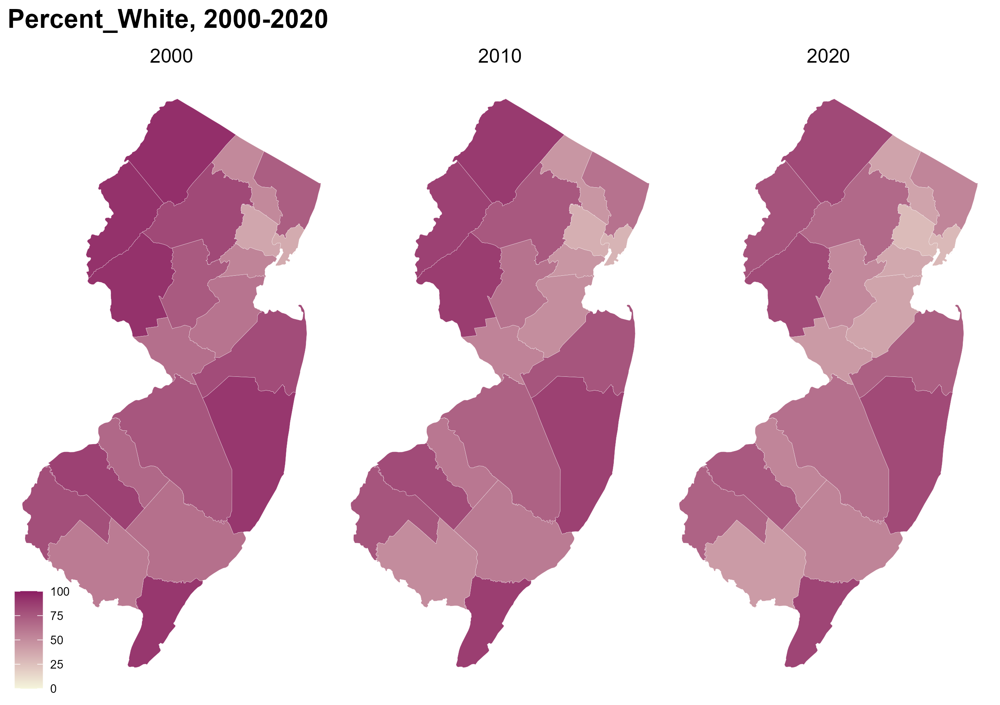 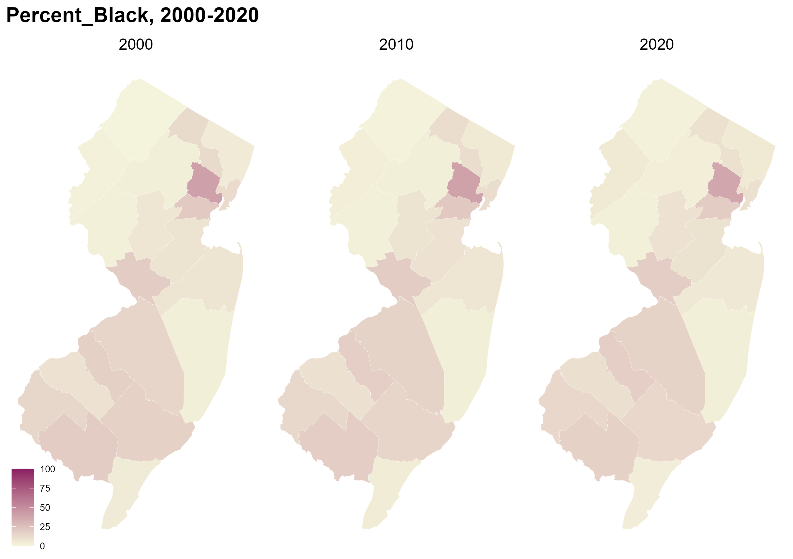
In the second set of graphs, I adjusted the scale for each graph so that it was ran between the minimum and maximum values of the percent of the given racial/ethnic group (Figures 13 and 14). As a result, these maps have more color and make it more clear where there are larger pockets of Black, Hispanic/Latino, and Asian residents.
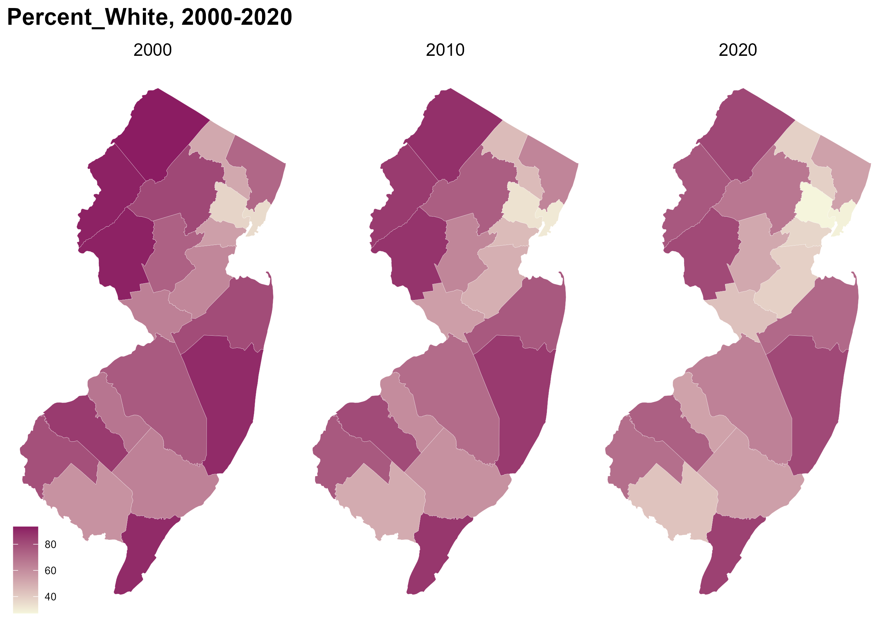 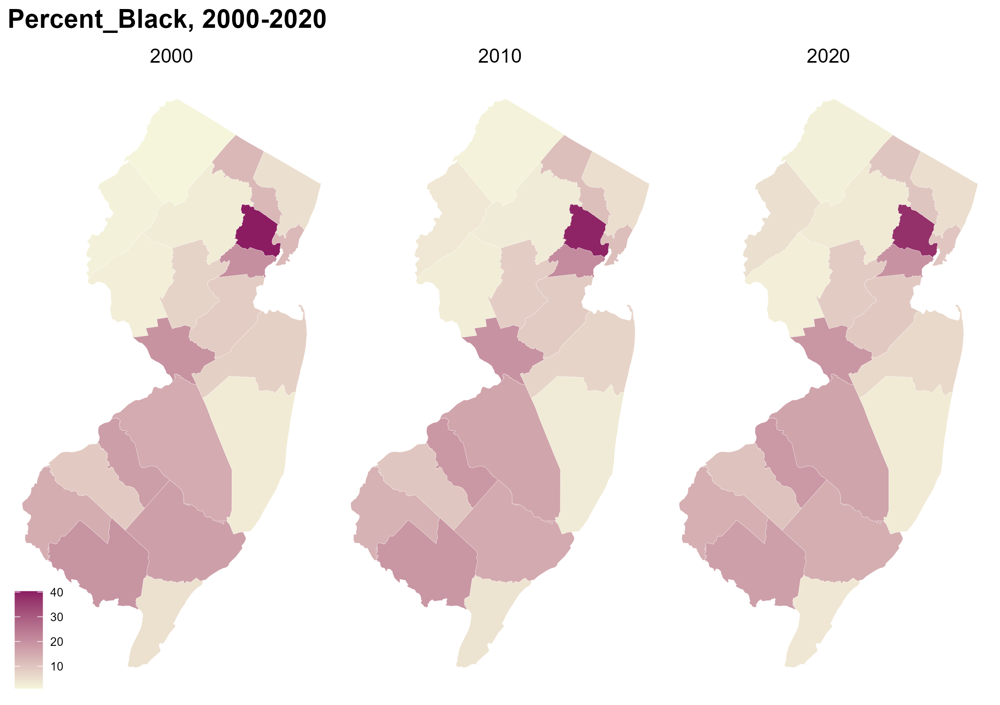
Finally, in order to more succinctly summarize what the racial/ethnicity graphs show, I created a final figure to show the dominant racial/ethnic group in a given county in New Jersey for 2000, 2010, and 2020 (Figure 15). Each county is colored with the dominant racial/ethnic group for a given year. Clearly, the vast majority of counties are predominantly white. However, one county, Passaic in the north, flips from predominantly white in 2010 to predominantly Hispanic/Latino in 2020. Moreover, each county is shaded according to the size of the racial/ethnic majority/plurality. For ease of comparison, I also included the percentage of the dominant group for each county. You can see that whereas in 2000 most countries are somewhere between 60-95% white, many remain dominantly white but drop from being majority white to simply having a plurality of white residents. For example, Middlesex county (my home county) in the center of the state drops from 62% white in 2000 to 49% in 2010 and 39% in 2020. Maps in the Appendix help show that Middlesex had a growing Asian population in addition to more Hispanic/Latino and Black residents who dilute the white majority. This trend is replicated in other counties such as Mercer (64%-54%-44%) which houses the state capital, Trenton.

Reflections
Over the last 25 years, New Jersey has grown more populous, more densely populated, more Democratic, and less white. The presidential and senate elections in particular reveal a more polarized state. In 2000, NJ had more “purple” counties (note: “purple” counties actually show as white in this analysis). By 2025, certain counties, like Ocean County which takes up a majority of the Jersey shore, had become more concentrated red while highly urban counties close to New York City (Essex, Hudson, Passaic) grew more and more deeply blue. Population growth in traditionally blue urban centers may have helped propel Mikie Sherill to an early victory, but so did more Democratic votes in every single county.
I think one of my biggest takeaways from this project was about working with data from the Census. I expected it to be relatively straightforward to identify which variables I needed and then use the Tidycensus package to pull them. Instead, I found that even the last three decennial censuses (2000, 2010, and 2020) had differences that made it tedious to go through and identify the right variable each time. While I did receive some help from Copilot, the AI also made various errors (e.g., giving me variable codes that were each one off from the real one, so white was actually the total, Black was white, American Indian was Black, etc.). I also learned more about the decennial census versus the American Community Survey (ACS). Originally, I had wanted to include education and income level, but I struggled to find the right variables and to harmonize information from the ACS for later years with information from the 2000 census. I could really appreciate how researchers and data scientists who regularly work with census data would become accustomed to the format.
For this project, I also enjoyed playing around with some principles of visualization. I spent time experimenting with different colors, moving from discrete to continuous scales, using size versus length, etc. I think the AP figure replications illustrate this well: the first uses the size of circles while the second using the height of lines. As you’d expect, I find it far easier to make comparisons between countiny in the second figure. Additionally, for Figure 15, the dominant racial/ethnic group figure, I iniitally only used color and shading for the graph. Although I like how the shading allows viewers to see which counties are more domininantly white, I didn’t think it was at all easy to tell just what the percentage of the dominant group was, even adding a legend. So instead, I removed the legend and added labels to each county with the percentage of the dominant group. It was a good reminder that sometimes there’s a limit to what you can show with color and good, old-fashioned text does the best job.
Limitations
In many ways, my project suffers analytic deficiencies. The major one is that my figures are descriptive rather than explanatory. While there is certainly correlation between more Democratic support and a growth in the nonwhite population, I run no regression and include no control variables to support any causal explanation. Moreover, I initially wanted to include information about education and income level in NJ counties, but I found wrestling with Census codes from three decades to be too time-consuming. If I had these variables for the twenty-one counties, perhaps I could have run some initial regressions, although there are many other variables (e.g., urbanization, support for Trump, age, gender, etc) which would have been interesting to include in the analysis as controls.
AI Usage
For my project, I used Copilot as my main AI assistant. Below, I include a bullet-point summary of the different parts of the project where I consulted AI.
- I used AI to add the city names to the AP graph replications and make it so that they used different ggplot2 point codes.
- I resized the points in the first AP replication graph so that the size was reflective of the number of ballots counted.
- For the Margin Shift figure, I changed from a dot to an arrow and adjust the height of the arrows based on the size of the margin shift.
- I asked Copilot to generate color ideas, especially for the population and density figures.
- I used AI for miscellaneous ggplot2 work, including moving legends around, suppressing one but not the other legend for the dominant group figure, removing gray background, and modifying the size of the title and year labels.
- I asked Copilot for the variable names for the Census: note, Copilot often gave ones that were incorrect or slightly off, but it helped narrow things down. I also used a resource from Tidycensus about retrieiving all the variable codes which was helpful (but not from AI).
- I used AI fairly extensively to continuosly tweak the the dominant group figure. Most importantly, it gave me the code to include two layers: racial group and shading. Afterwards, I used it for small things like moving the legend, adding labels, etc.
- I wrote my own function for the racial/ethnic group maps, but I used Copilot to troubleshoot errors with my brackets and other syntax problems.
Appendix
This appendix includes all ten figures created for racial/ethnic groups in the census data, graphed on a 100-point scale and a scale between the minimum and maximum percentage value for each group.
Scale: 0 - 100%
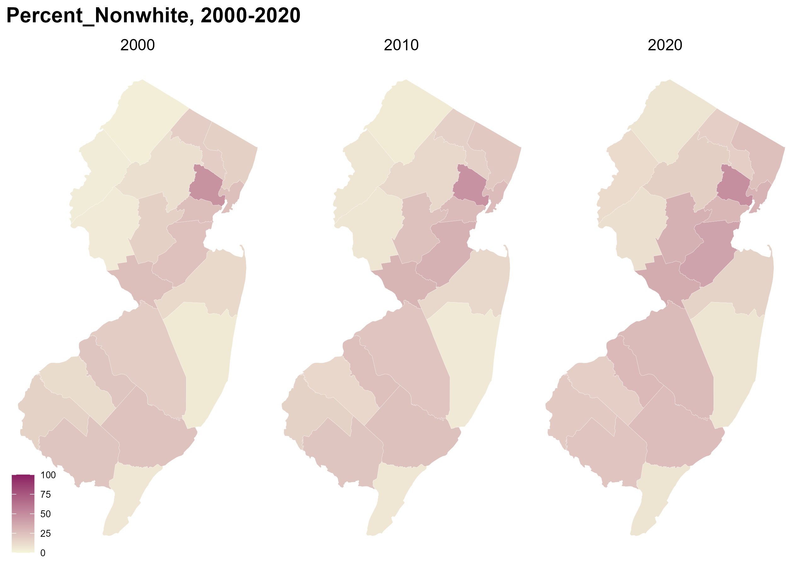 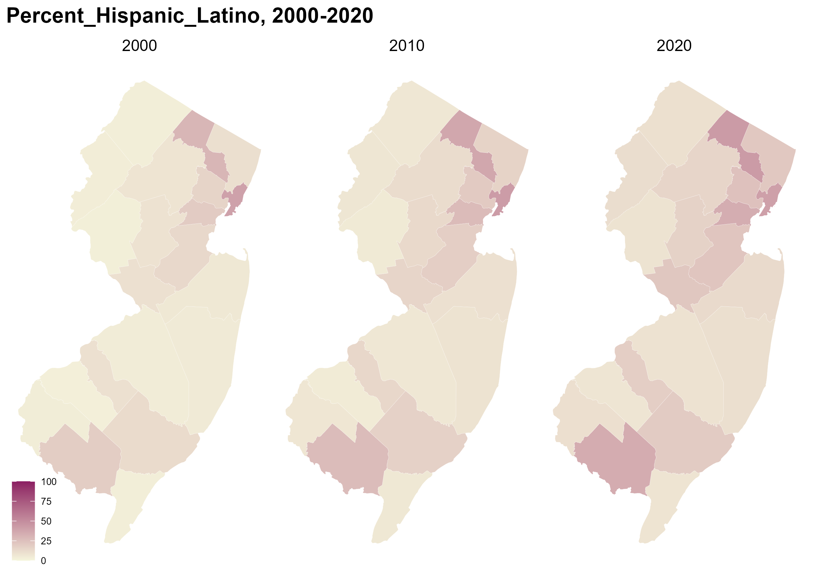 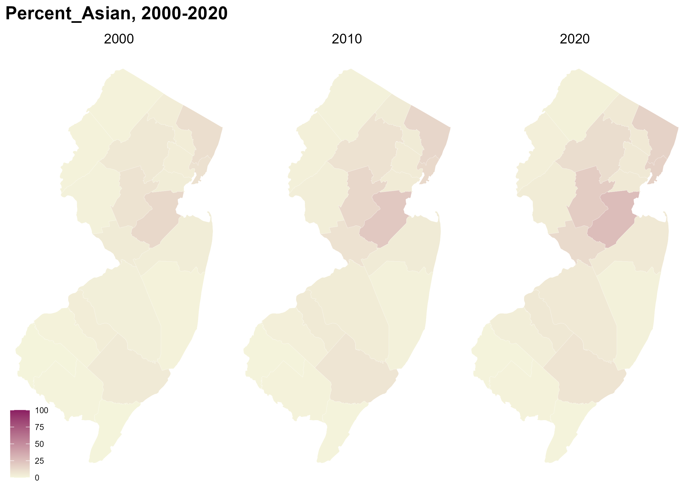
Scale: Minimum - Maximum
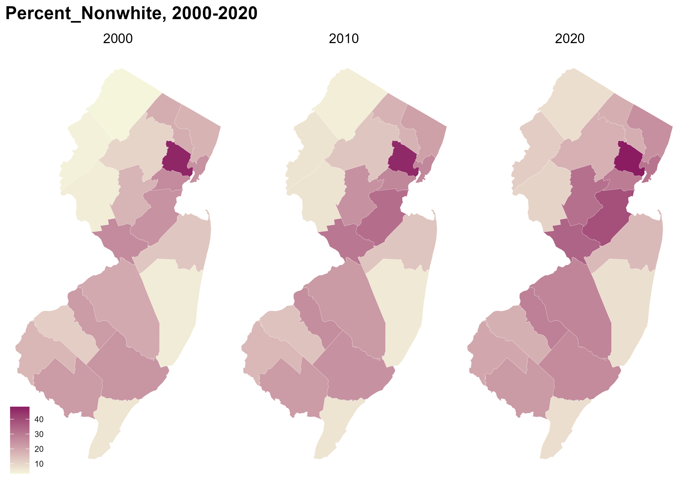 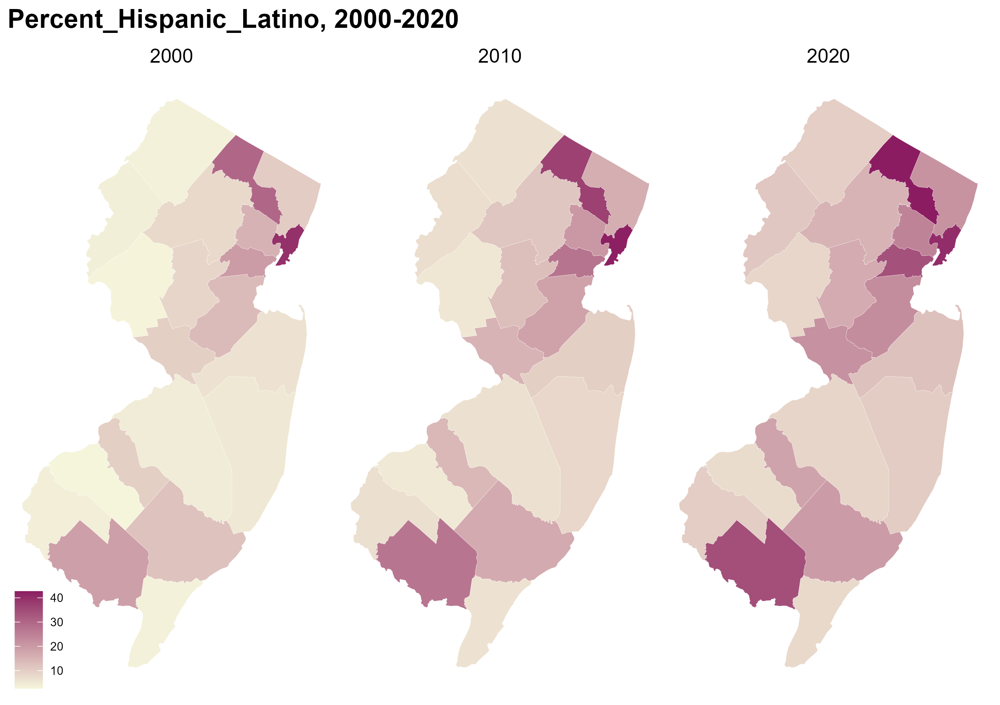 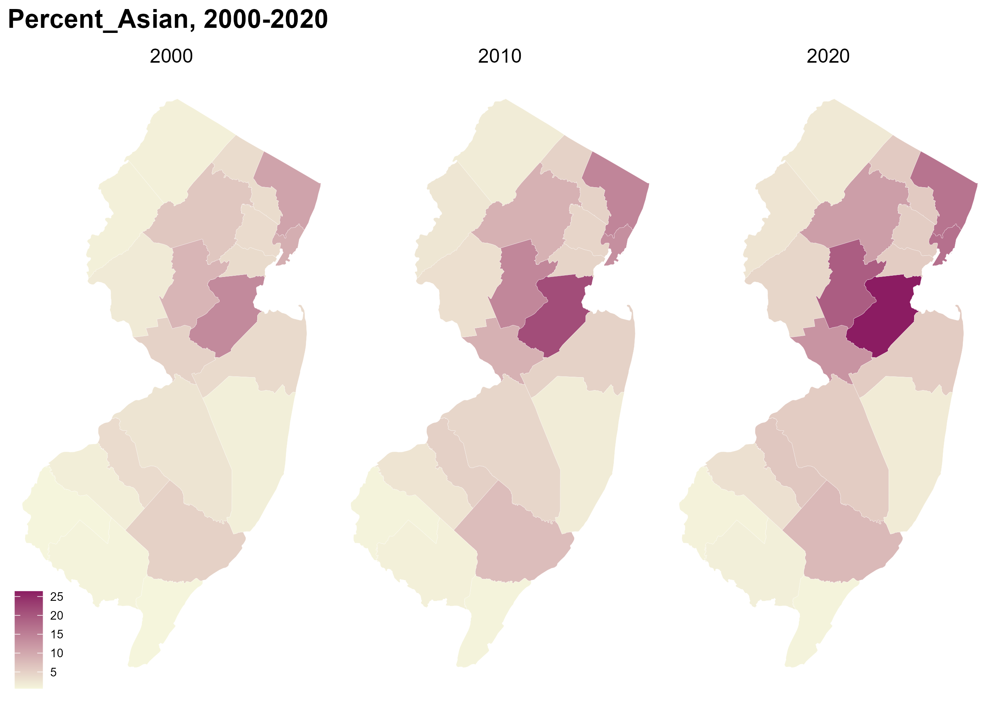